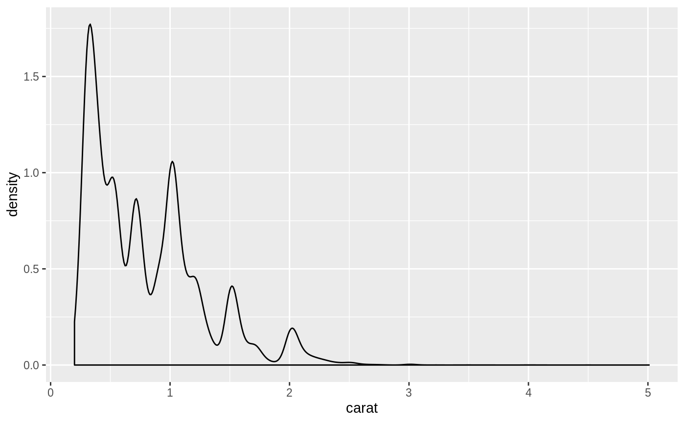
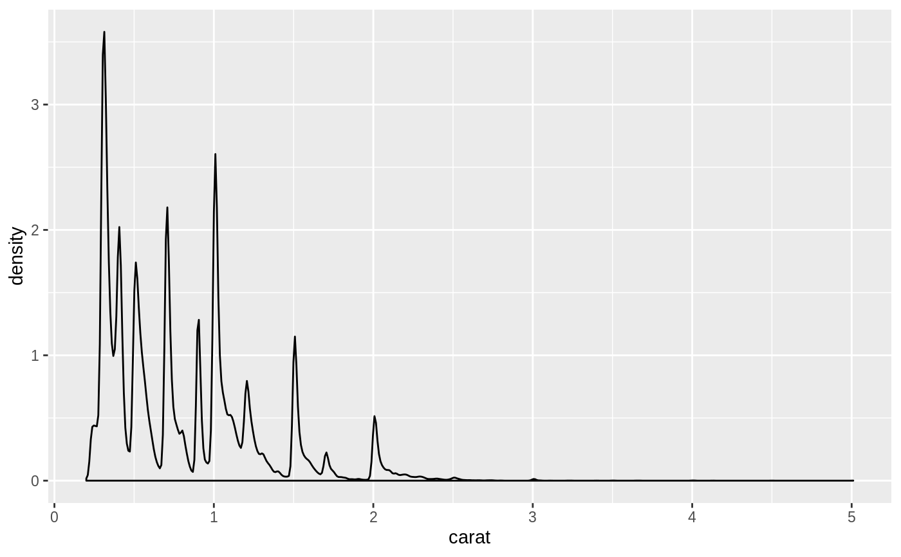
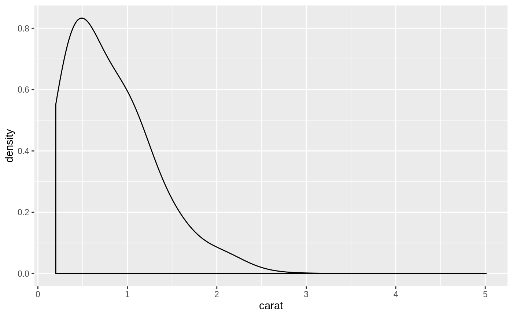
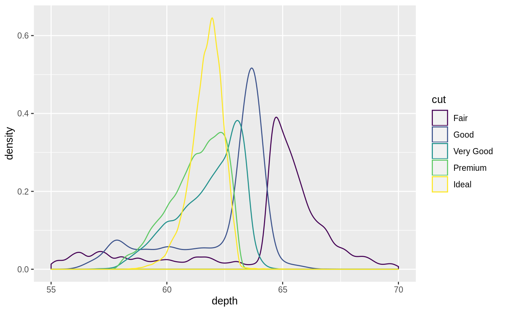
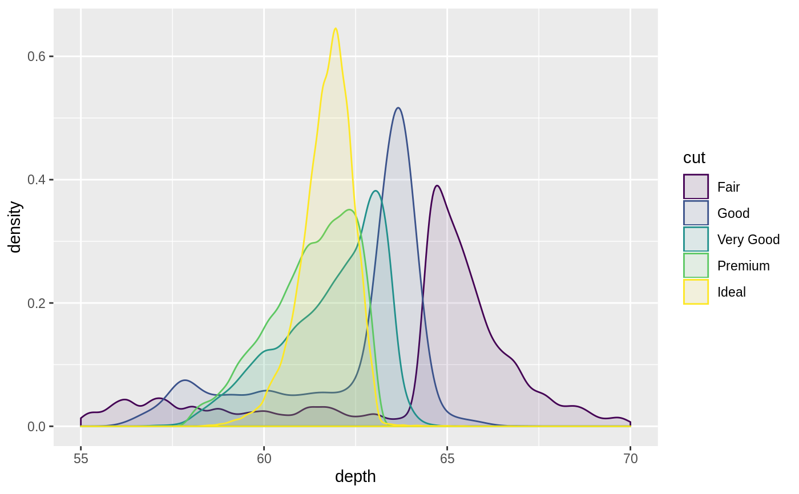
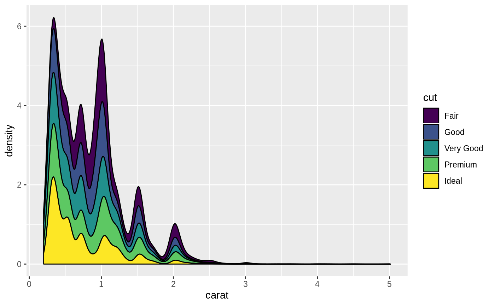
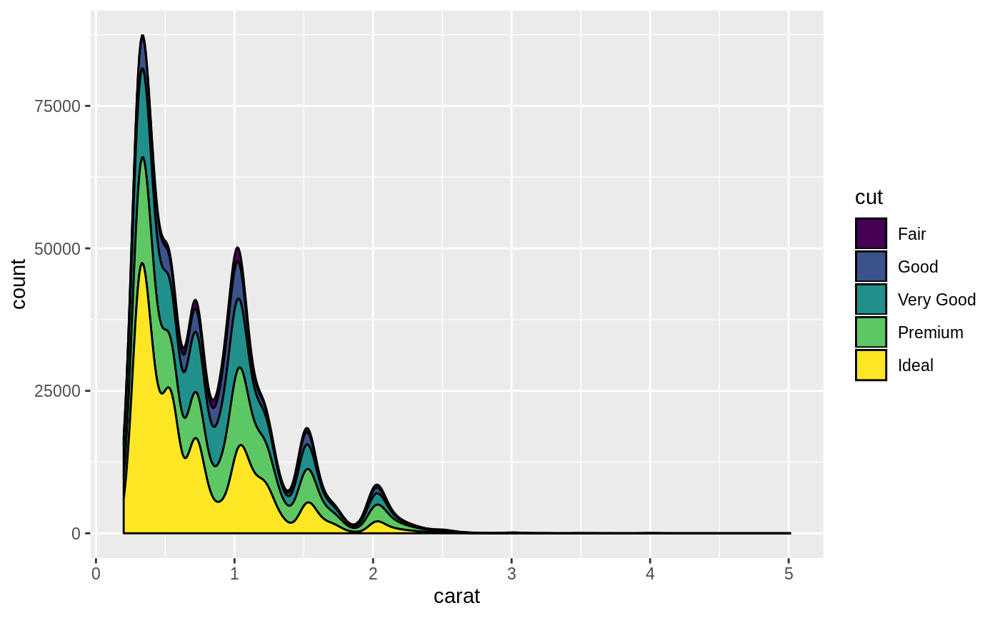
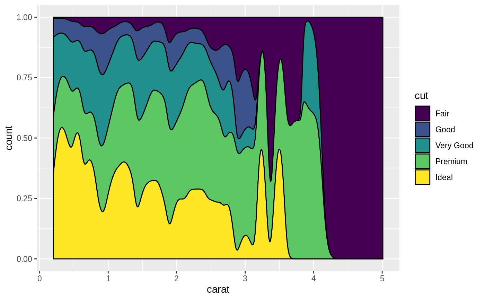

Computes and draws kernel density estimate, which is a smoothed version of the histogram. This is a useful alternative to the histogram for continuous data that comes from an underlying smooth distribution.
geom_density(mapping = NULL, data = NULL, stat = "density", position = "identity", ..., na.rm = FALSE, show.legend = NA, inherit.aes = TRUE) stat_density(mapping = NULL, data = NULL, geom = "area", position = "stack", ..., bw = "nrd0", adjust = 1, kernel = "gaussian", n = 512, trim = FALSE, na.rm = FALSE, show.legend = NA, inherit.aes = TRUE)
| mapping | Set of aesthetic mappings created by |
|---|---|
| data | The data to be displayed in this layer. There are three options: If A A |
| position | Position adjustment, either as a string, or the result of a call to a position adjustment function. |
| ... | Other arguments passed on to |
| na.rm | If |
| show.legend | logical. Should this layer be included in the legends?
|
| inherit.aes | If |
| geom, stat | Use to override the default connection between
|
| bw | The smoothing bandwidth to be used.
If numeric, the standard deviation of the smoothing kernel.
If character, a rule to choose the bandwidth, as listed in
|
| adjust | A multiplicate bandwidth adjustment. This makes it possible
to adjust the bandwidth while still using the a bandwidth estimator.
For example, |
| kernel | Kernel. See list of available kernels in |
| n | number of equally spaced points at which the density is to be
estimated, should be a power of two, see |
| trim | This parameter only matters if you are displaying multiple
densities in one plot. If |
geom_density() understands the following aesthetics (required aesthetics are in bold):
x
y
alpha
colour
fill
group
linetype
size
weight
Learn more about setting these aesthetics in vignette("ggplot2-specs").
density estimate
density * number of points - useful for stacked density plots
density estimate, scaled to maximum of 1
alias for scaled, to mirror the syntax of
stat_bin()
See geom_histogram(), geom_freqpoly() for
other methods of displaying continuous distribution.
See geom_violin() for a compact density display.
#> Warning: Removed 45 rows containing non-finite values (stat_density).#> Warning: Removed 45 rows containing non-finite values (stat_density).# \donttest{ # Stacked density plots: if you want to create a stacked density plot, you # probably want to 'count' (density * n) variable instead of the default # density # Loses marginal densities ggplot(diamonds, aes(carat, fill = cut)) + geom_density(position = "stack")# Preserves marginal densities ggplot(diamonds, aes(carat, stat(count), fill = cut)) + geom_density(position = "stack")# You can use position="fill" to produce a conditional density estimate ggplot(diamonds, aes(carat, stat(count), fill = cut)) + geom_density(position = "fill")# }